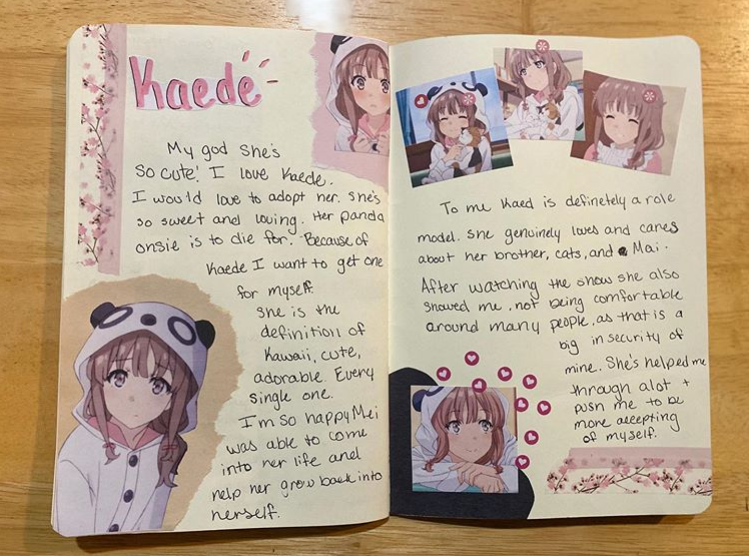

Hi! My name is Sydney Mason. While at Lewis I am majoring in Computer Science. I know I want to minor in something but I am not quite sure what exactly yet. My family has grown exponentially within the past few years. My dad got remarried so for his side it's him, my step mom, my two step sisters, and my step brother. My mom hasn't remarried, so on her side it's just us. However, I have a half sister on my mom's side who lives in Arizona and she too got married in the past few years. So I have her and her husband along with my niece and nephew. (My nephew is the baby in the picture soon after he was born.)
My Favorie Hobby is Creative Journaling. I have found great satisfaction in creating aesthetic entries that serve as a way for me to vent my opinions on anime, and anime characters. In the year that I have been jouraling I have noticed that it has become a healthy outlet to my aniexty, and let my creative side take over. Shortly after starting my journal I started an instagram account dedicated to journaling. Below are some of my favorite spreads I have done.
At one point I was in the 98% percentile in Splatoon 2.
Is my hair really this curly? Yes, it is.
Do I have any anime recommendations? Many.
Right now Jujutsu Kaisen is airing and feels a lot like Bleach (so if you liked that you would like
this).
If you haven't watch Erased. Watch it. It's on Netflix now, great story. Only 12 episodes.
The Promised Neverland, fantastic show Season 2 comes outthis coming January, hopefully.
Haikyuu!! It's about volleyball. But it does a great job making volleyball feel like a battle.
Doesn't really get good until episode 3 in my opinion. About 70-80 episodes.
My Hero Academia is great starting anime if you like Marvel and interested in delving into anime.
I believe it has about 70-80 episodes. Season 5 aires in April.
Attack on Titan, fourth season, and final sesaon starts airing December 7th. With the way the
story is set up Attack on Titan is most likely going to be one of the best stories ever told
I recommend you get on the hype train before it ends, so you don't get spoiled. Also the third
season is one the best season of anime ever. And Levi Ackerman is the true short king.
Assassination Classroom, funny and exciting. Middle schoolers have one year to kill thier teacher.
Fantastic fight scenes and plot. Ending was beautiful. The whole show is about 47 episodes, so it
won't take forever like One Piece.
One Piece, it's about pirates and some have special powers. Very entertaining. Zoro is worth the
940 episodes. Believe me. It is a lot I know, but just give it a try. First few major arcs are on
Netflix
Silent Voice, its amazing. Very powerful. It was nominated for an Oscar, and anime is rarely
ever nominated for an academy award. It is quite dark, so beware. Only 2 hours.
Rascal Does Not Dream of Bunny Girl Senpai. It is in a similar genre to Silent Voice. It depicts
life as teenager in the times of the internet and social media very accurately. It is a bit "weird"
but that is because it is a psychological show meant to get you to try to figure out what is
happening before they reveal it. 12 episodes and 1 movie, you can watch it all in one day.
Gleipnir, if you likes My Hero Academia, and are okay with gore, and slightly more rated r content
you would like this. I also really want a season 2 so at least give it a try. I really want
another season. 12 Episodes.
Favorite Color? a happy yellow.
Where do you want to travel? Japan. There's an Attack on Titan cafe that when you leave you walk
down a dark hallway with a sound track playing that is what the creator is imagining for the the
chapter. Plus their tea cups are based on the ones Levi owned in The Underground. (What is The
Underground? Watch the show. Please. Its great.)